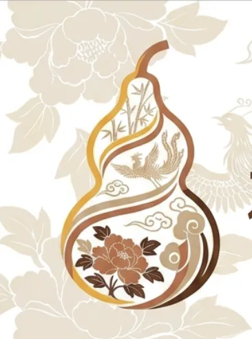
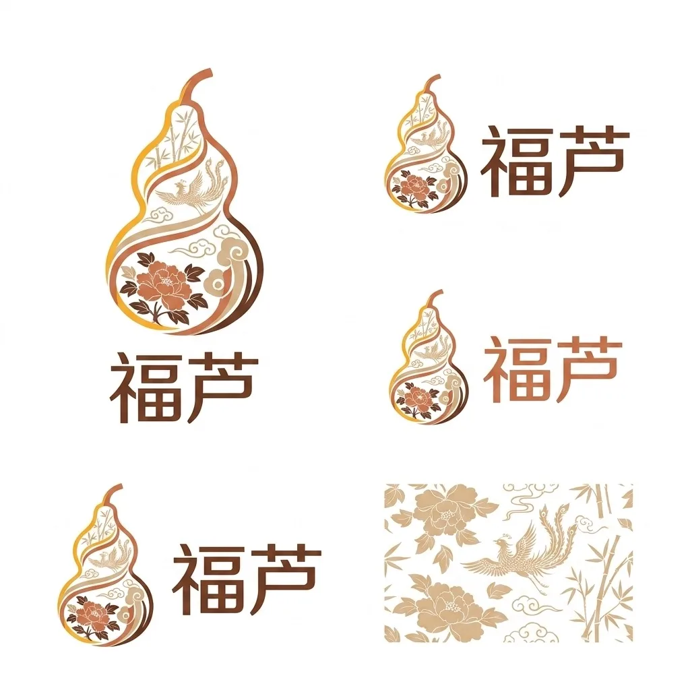
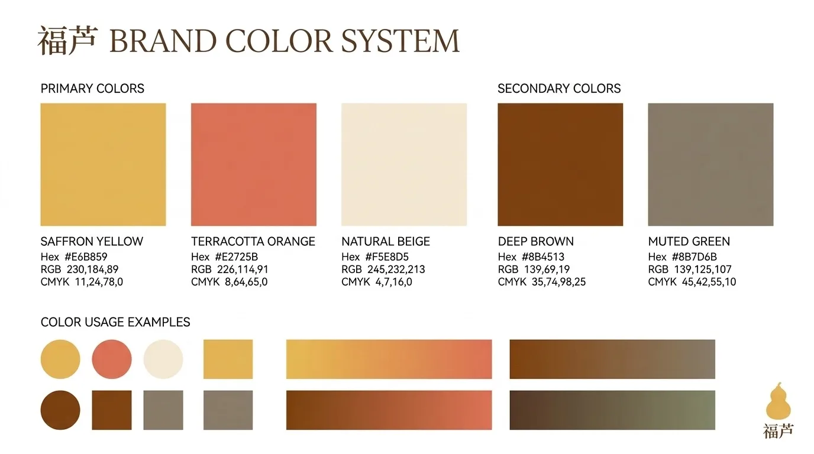
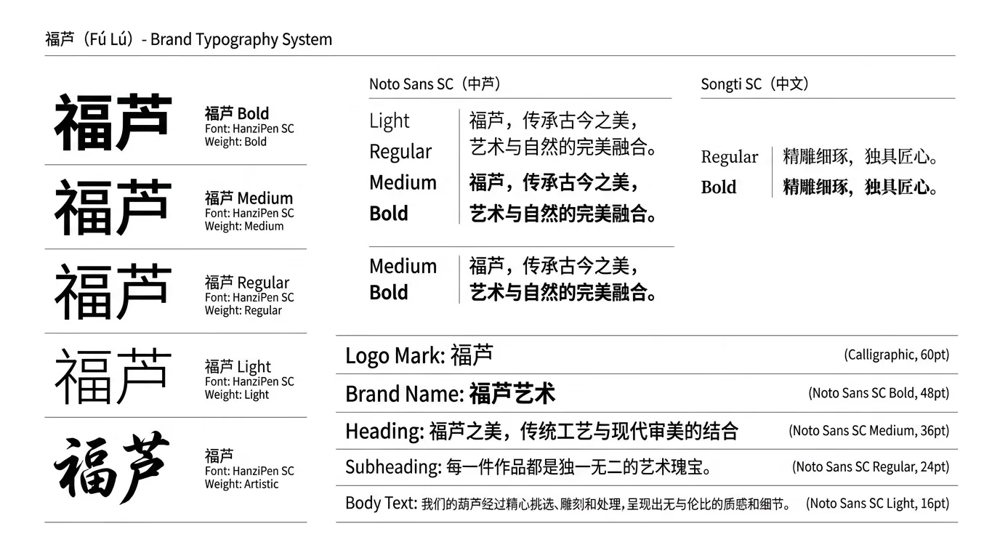
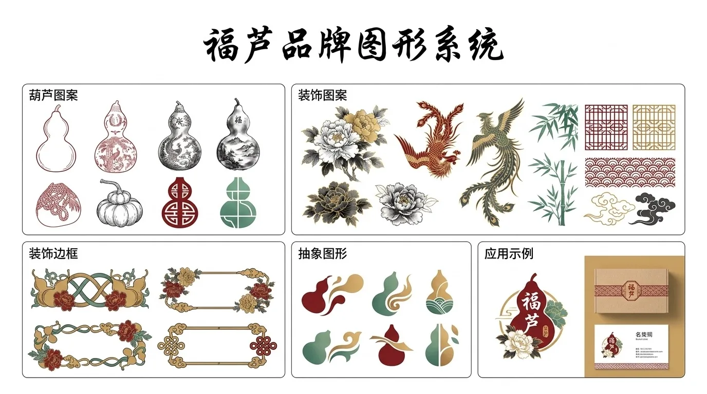
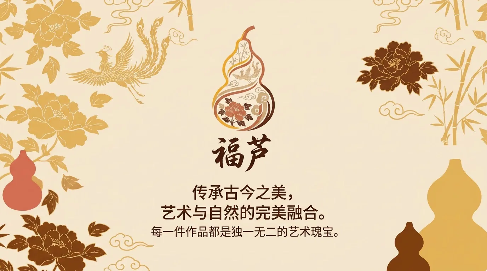
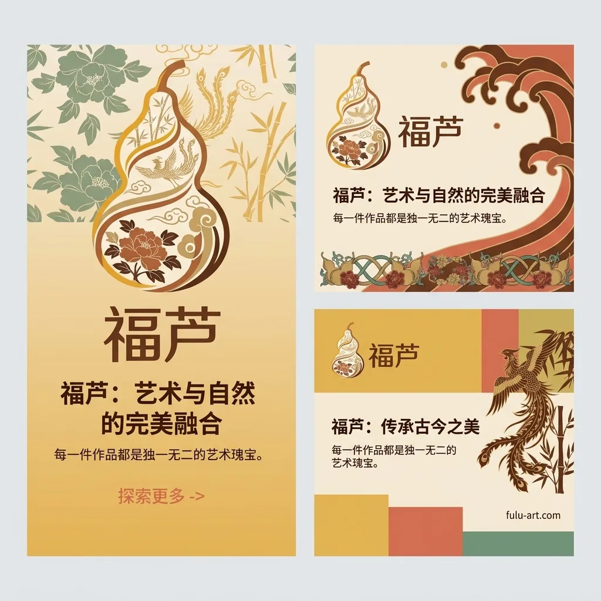
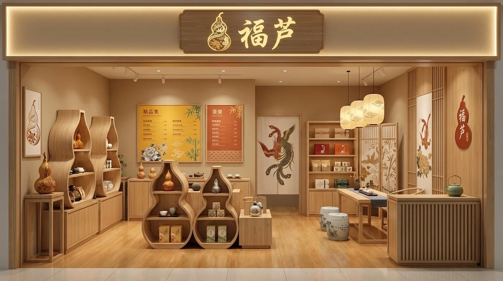
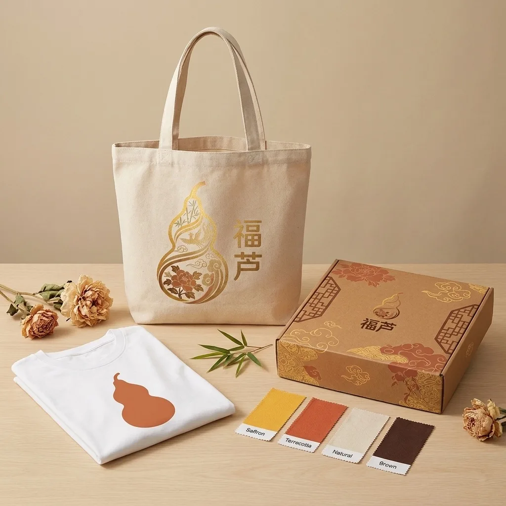

Brand & Space / PROJECT 24
福芦
福芦 · Fu Lu
以葫芦为核心意象的中式传统文化品牌，主张"传承古今之美，艺术与自然的完美融合"。
- ROLE
- 品牌识别与视觉系统设计
- TIME
- 项目年份待确认
- TOOLS
- 设计工具清单未提供
- TYPE
- Visual design study
- STATUS
- Independent visual study

01 / ONE-LINE CONCEPT
One-line concept
以葫芦为核心意象的中式传统文化品牌，主张"传承古今之美，艺术与自然的完美融合"。
02 / VISUAL SYSTEM
Visual system
- Logo：葫芦轮廓内嵌凤凰/牡丹/竹/云纹，5种锁定版本
- 色彩：藏红花黄/陶土橙/自然米/深棕/灰绿
- 字体：HanziPen SC定制品牌字 + Noto Sans SC + Songti SC
- 图形：8款葫芦图案 + 牡丹/凤凰/竹/窗棂/祥云装饰




04 / APPLICATIONS
Applications


05 / FINAL OUTPUT
Final output
以葫芦为核心意象的中式传统文化品牌，主张"传承古今之美，艺术与自然的完美融合"。完整 VI 体系：Logo/色彩/字体/图形/海报/社媒模板/店铺陈列/物料周边。
More exploration / 2 more images


CONTINUE EXPLORING